— monograma de Daniel Fonseca">Portafolio en construcción
Junior Developer & Data Analyst
Convierto datos en soluciones claras.
Muy pronto en línea
Escríbeme

— monograma de Daniel Fonseca">Junior Developer & Data Analyst
Convierto datos en soluciones claras.